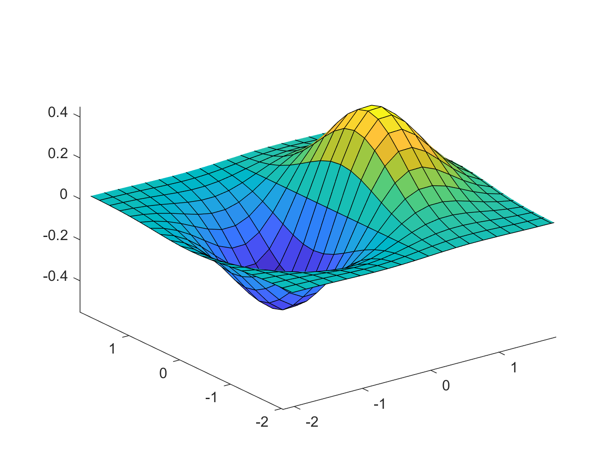
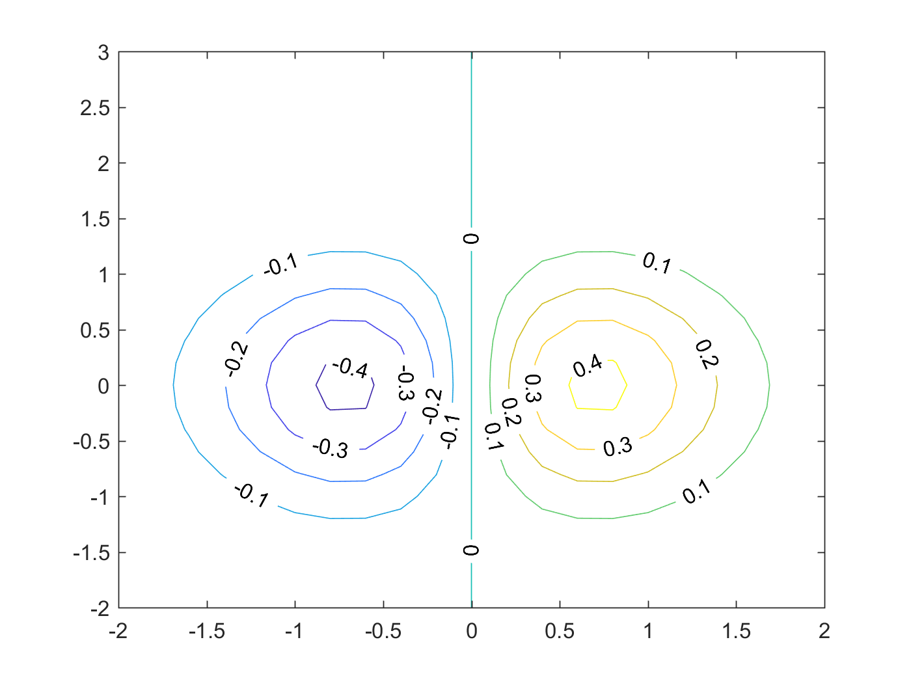

使用matlab的surface和contour画图
1 简介
2 surface
看代码：
1: [X,Y] = meshgrid(-2:0.2:2,-2:0.2:2); 2: Z = X.*exp(-X.^2 - Y.^2); 3: figure 4: surface(X,Y,Z) 5: view(3)
结果如图：

图 1: surface示例
注意在画图的时候，最后一句 view(3) 是必须的。不然matlab会默认使用 view(2) ,看到的会是二维的平面截图。
3 contour
contour 的功能是画一个多维函数的等高线。
看代码：
1: x = -2:0.2:2; 2: y = -2:0.2:3; 3: [X,Y] = meshgrid(x,y); 4: Z = X.*exp(-X.^2-Y.^2); 5: 6: figure 7: contour(X,Y,Z,'ShowText','on')
结果如图：

图 2: contour示例
matlab的帮助手册中有关于contour的更详细的说明，包括一些画图的技巧，等高线的间隔，高亮某条等高线等等。